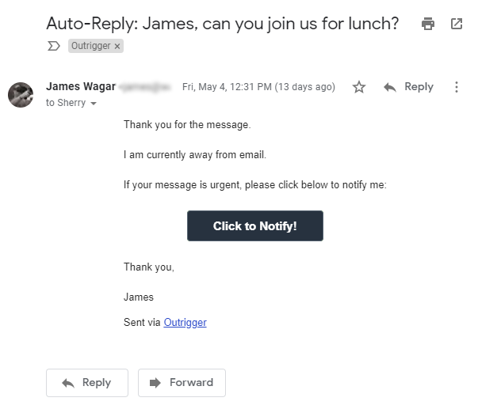

Maintainability
At 11,523 lines of JavaScript spread across 83 files, Outrigger is reasonably maintainable. Outrigger only requires 52 dependencies from NPM, most of which are used for logging. (this is low)
Avery Wagar
May 18th, 2018
Source: Investopedia
The Industrial Revolution saw:
Source: Investopedia
Industrialization: the development of industries in a country or region on a wide scale.
Mechanization: the process of changing from working largely or exclusively by hand or with animals to doing that work with machinery.
Economic conditions: refers to the present state of the economy in a country or region.
The Industrial Revolution was the transition to new manufacturing processes in the period from about 1760 to sometime between 1820 and 1840.
Source: Wikipedia
A key invention during the Industrial Revolution was the Telegraph.

There are 3.7 billion email accounts worldwide.
Each day, a staggering 269 billion emails are sent.
That is 73 emails per account per day.
By the time we graduate, email volume will be
320 billion per day.
Source: The Radicati Group, Inc.
How many of these are truly urgent?
It takes an average of 23 minutes to regain focus after an interruption.
There is a growing expectation of availability via mobile devices and it is exceedingly difficult to unplug.
Source: U.C. Irvine
I built Outrigger to solve these problems and help people create some space between themselves and their email inboxes to better focus on
what’s important.
Outrigger is a better out of office responder with smarter email notifications.
The idea for Outrigger began on a family vacation and was shaped by the observation that most email out of office (OOO) messages either create too much friction when a message is truly urgent or rub the original sender the wrong way. As a result, people rarely set them and when they do, many check their email anyway.
This OOO message helped inspire Outrigger.
It suggests five different people that the sender could contact for assistance.
By contrast, this is an Outrigger OOO message.

If the sender clicks the button,
the Outrigger user gets this. (via text)
In the future, the notification could go to a teammate.
Additionally, modern emails services (Google/Microsoft)
do a good job identifying important emails but struggle to identify urgent emails.
Customizable Notifications: Get email notifications through your preferred channel. (SMS (text), FB Messenger, Telegram, Slack, etc.)
Auto-Replies: When you need to focus, Outrigger responds to emails with a customizable message and notification link. (useful for during school, expos, meetings, etc.)
VIP Whitelist: Immediately receive a notification when a VIP emails you. (teachers, etc.)
Periscope Mode: If someone replies to an email you sent within a set time, you get a notification. Keep important conversations going.
Contacts Integration: Only send auto-replies to people in your contacts.
Customizable Filters: Limit which emails receive an auto-reply.
Blacklist: Want to ghost someone? Add them to your blacklist!
Calendar Integration: Outrigger will turn itself on or off based on your calendar appointments or a set schedule.
Machine Learning/AI: Eventually Outrigger will determine the best settings for your inbox. Additionally, it will learn who is important in your network and prioritize urgent notifications from them.
With a database storing user accounts, Outrigger is able to leverage enough of Google’s APIs to allow for a maximum of 6-16% CPU usage during peak use hours. (this is low)
Currently, Outrigger is running on a single free tier instance on AWS. It will be free until the end of 2018. Afterward Outrigger will cost less than $10 per month to run. (at its current scale, which supports hundreds of users)
At 11,523 lines of JavaScript spread across 83 files, Outrigger is reasonably maintainable. Outrigger only requires 52 dependencies from NPM, most of which are used for logging. (this is low)
Outrigger is available today for Gmail and G-Suite users. Let me know if you want to try it. outriggerapp.com
Rig up and step out.